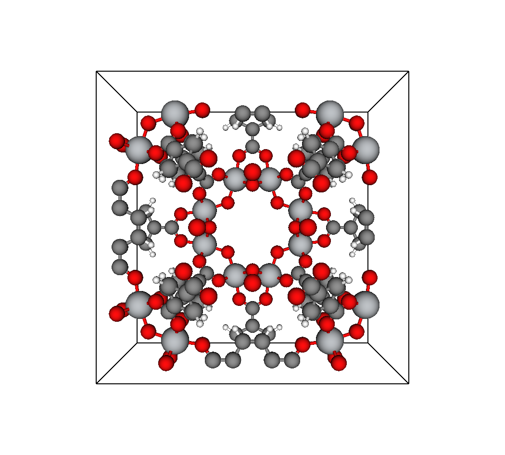
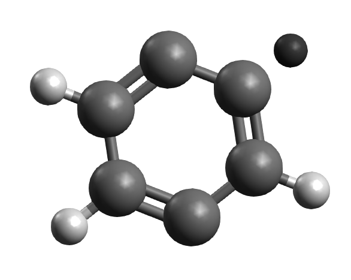

Input Files
This section details the handling of data paths, formatting of input files, and loading of data into PoreMatMod.jl.
Data Directories
PoreMatMod.jl draws its basic working data (atomic masses, covalent radii, etc.) from Xtals.jl.
Structural data are drawn from rc[:paths][:crystals] and rc[:paths][:moieties]. These paths are set at module load time, and default to ./data/crystals and ./data/moieties, respectively.
Input Files and Formats
Crystals
PoreMatMod.jl requires chemical structural data as input. The first necessary input is a .cif or .cssr file containing atomic coordinates and unit cell information.

The file must be located in rc[:paths][:crystals] as described above. In the case of our guiding example, the functionalization of IRMOF-1, this means we need to either put IRMOF-1.cif into ./data/crystals or set rc[:paths][:crystals] to point PoreMatMod.jl to where it is located.
Fragments
The next required input is a .xyz file containing the atomic coordinates of a search moiety–a chemical substructure to identify in the crystal. The .xyz format is simple: the first line gives the number of input lines which follow, and each subsequent input line consists of the atom label in the first space-delimited column, followed by 3 columns for the atom's Cartesian coordinates in Ångströms.
For use with PoreMatMod.jl, .xyz data must have clean atom labels, meaning only plain atomic symbols. The exception is the use of ! for indicating atoms which will be altered in a replace operation. For substructure searches using [substructure_search], any ! tags are ignored (the atoms are treated as normal).

The .xyz file must be located at rc[:paths][:moieties]. For what we want to do with IRMOF-1, the best choice is to search for the p-phenylene.xyz moiety that is the core of the BDC linker.
Loading Files
Load IRMOF-1.cif and build the bonding network:
parent = Crystal("IRMOF-1.cif")
infer_bonds!(parent, true)Crystal is inherited and re-exported from Xtals.jl. See the docs for more information.
Load p-phenylene.xyz:
query = moiety("p-phenylene.xyz")Both parent and query are Crystal objects.
Documentation
PoreMatMod.moiety — Functionmoiety(name)Generates a moiety (Crystal) from an .xyz file found in rc[:paths][:moieties]
Use set_path_to_data or set rc[:paths][:moieties] to change the input path.
Atoms appended with '!' are tagged for replacement via substructure_replace.
Bonds are inferred automatically.
Arguments
name::Stringthe moiety input file name.